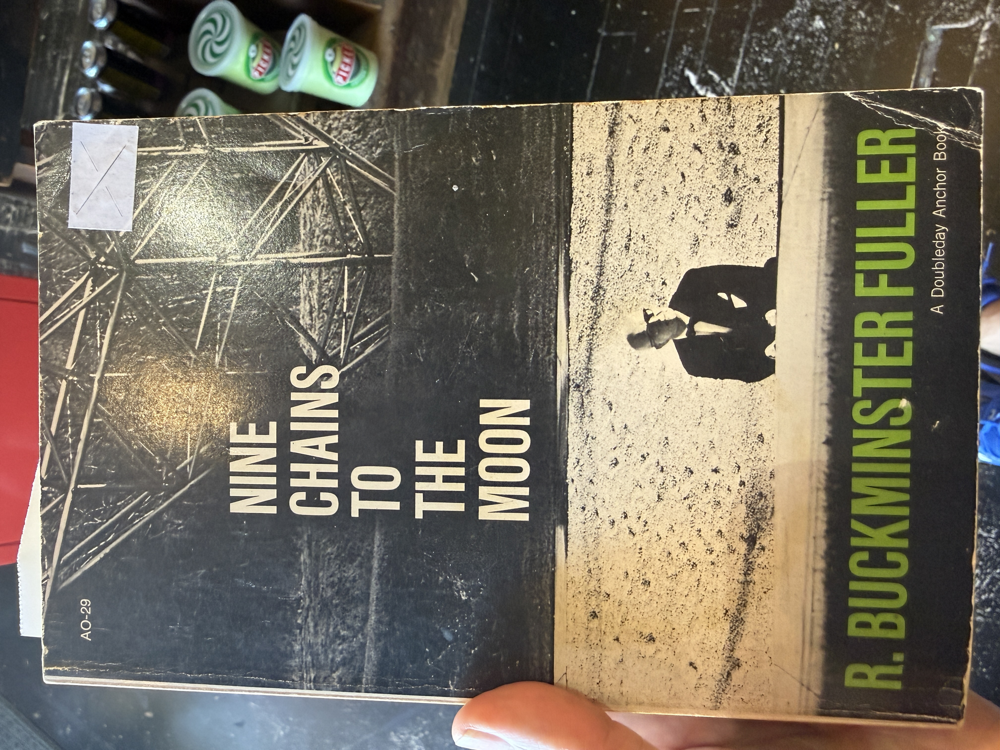

A reading experiment
Nine Chains
to the Moon
A conversation between R. Buckminster Fuller, Alfredo Mathew, and AI. Each page begins with a photographed passage and continues through interpretation and synthesis.

Writing in the margin of a book without writing in the margin of a book.
The vignettes
- 01There are no margins→
- 02A Depersonalized Instrument→
- 03Economics, Ecology, and the House→
- 04The Deroboting of Humanity→
- 05The Eternal Project→
- 06We Always Come Back, Just Not the Same→
- 07The Phantom Captain→
- 08The Illusion of Possession→
- 09The Highway Through the Meadow→
- 10One and the Same Person→
- 11The House Inside the Word→
- 12–13What Aligns with the Universe Grows→
- 14Spirit Must Take Form→
- 15To Evolve Is Not to Revolve→
- 16Not Re-form, but Form→
- 17The Cold Universe of the Replaceable Noun→
- 18Critical Connections, Not Critical Mass→
Images 12 and 13 form one continuous vignette.